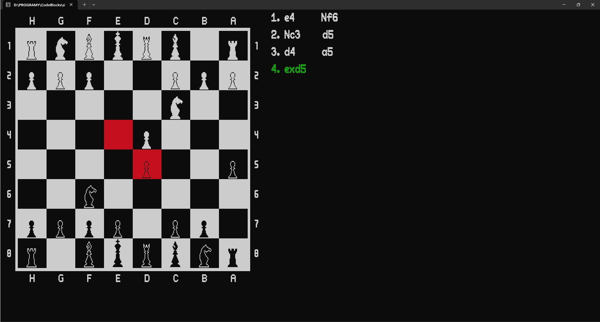

Silnik Szachowy
https://github.com/Szachista-Programista/silnik-szachowy
Witaj na mojej stronie portfolio! Tutaj znajdziesz informacje o
moim najnowszym projekcie - silniku szachowym napisanym w języku
C++. Ten program jest dedykowany dla miłośników gier szachowych
oraz entuzjastów programowania. Dzięki swojej funkcjonalności i
prostocie obsługi, ten silnik szachowy pozwala użytkownikom
cieszyć się grą w szachy. Zapraszam do zapoznania się ze
szczegółami.
O grafice
Jednym z interesujących elementów mojego programu jest jego
wyjątkowa szata graficzna, która jest stworzona w formie
pixel artu. Szachownica, serce mojego programu, została
zaimplementowana jako tablica znaków o wymiarach 416 x 176 znaków.
Ta metoda pozwoliła na stworzenie szczegółowej i estetycznej
grafiki, co sprawia, że użytkownicy mogą cieszyć się grą
nierozpraszając się małoczytelnym interfacem programu. Dzięki temu
podejściu każdy ruch na szachownicy staje się niezwykle
satysfakcjonujący jak na pracę w konsoli dzięki płynnym zmianom w
zakolorowaniu odpowiednich pól, co podnosi poziom przyjemności z
gry.
Napisanie programu, który łączy w sobie estetyczny interfejs z
działaniem w konsoli, stanowiło dla mnie ciekawe wyzwanie.
Zdecydowałem się nie używać bibliotek graficznych, co pozwoliło mi
na stworzenie unikalnego i minimalistycznego interfejsu,
zachowując prostotę i elegancję. To podejście wymagało ode mnie
kreatywności i zaangażowania, ale ostatecznie pozwoliło na
stworzenie programu, który jest nie tylko funkcjonalny, ale także
estetyczny i przyjemny dla oka. Jestem dumny z tego, że udało mi
się stworzyć coś wyjątkowego, co przyciąga uwagę.

Przedstawione poniżej zdjęcia prezentują znaki, która są używane w
moim programie. Każdy znak został zaprojektowany tak, aby
wyświetlać się w konsoli z maksymalną klarownością i estetyką.
Każdy znak ma wysokość dziewięciu znaków, co pozwala na uzyskanie
szczegółowego pixel artu. Obejmuje to duże i małe litery, cyfry
oraz różne niezbędne znaki interpunkcyjne. Sprawia to, że
użytkownicy mogą cieszyć się zarówno funkcjonalnością, jak i
estetyką programu podczas rozgrywki czytając klarowne komunikaty.
Opis ogólny
Program jest silnikiem szachowym, który umożliwia użytkownikom
granie w szachy za pomocą konsoli. Zaprojektowany z myślą o
prostocie obsługi i estetyce, program oferuje interaktywny
interfejs, który pozwala użytkownikom na wykonywanie ruchów,
wyświetlanie aktualnego stanu szachownicy oraz notacji szachowej.
Silnik szachowy wykorzystuje zaawansowane algorytmy do obliczania
najlepszych ruchów, co zapewnia użytkownikom realistyczne
doświadczenie gry w szachy. Program został stworzony bez użycia
bibliotek graficznych, co pozwala na zachowanie minimalistycznego
interfejsu w konsoli i skupienie się na samej mechanice gry.
Implementacja silnika
Silnik szachowy został zaimplementowany z wykorzystaniem
zaawansowanych algorytmów szachowych. Podstawowym elementem
silnika jest reprezentacja szachownicy za pomocą tablicy
dwuwymiarowej, gdzie każde pole reprezentuje stan planszy w danym
momencie gry. Algorytmy szachowe, takie jak algorytm minimax,
zostały wykorzystane do generowania możliwych ruchów oraz wyboru
najlepszego ruchu dla komputera. Silnik obsługuje zasady gry w
szachy, takie jak ruchy specjalne roszady i bicia en passant.
Dodatkowo, zostały zaimplementowane funkcje oceny pozycji, które
pomagają silnikowi ocenić wartość danego układu na szachownicy i
podjąć optymalną decyzję. Dzięki temu zaawansowanemu silnikowi
użytkownicy mogą cieszyć się dynamiczną i realistyczną rozgrywką w
szachy przeciwko komputerowi.
Implementacja interface'u
Interfejs użytkownika programu został zaprojektowany w sposób
przyjazny dla użytkownika, umożliwiając łatwą nawigację i
interakcję z grą w szachy. Pomimo działania w konsoli, interfejs
oferuje czytelną prezentację szachownicy oraz aktualnego stanu
gry, co zapewnia użytkownikom wygodne doświadczanie gry. Dzięki
wykorzystaniu pixel artu, każdy element interfejsu jest estetyczny
i przyciągający wzrok, co sprawia, że rozgrywka staje się również
atrakcyjnym doświadczeniem wizualnym. Interfejs umożliwia
użytkownikom wykonywanie ruchów, wyświetlanie dostępnych opcji
oraz wygodne poruszanie się po menu gry. Dodatkowo, interfejs
obsługuje różne języki oraz opcje konfiguracji, co zapewnia
spersonalizowane doświadczenie użytkownika.
Klasy
Głównymi modułami programu są klasy Game, Play, Engine, Move,
Chessboard, Notice oraz Notebook. Klasa Game pełni rolę
centralnego kontrolera programu, obsługując menu główne,
ustawienia językowe i kolorów oraz inicjowanie gry. Klasa Play
odpowiada za przeprowadzanie poszczególnych partii gry, pobierając
ruchy od użytkownika i zarządzając logiką gry. Podczas gry Play
korzysta z klasy Chessboard do reprezentacji i odświeżania stanu
szachownicy oraz z klasy Notebook do zapisywania notacji ruchów.
Klasa Notice jest odpowiedzialna za wyświetlanie komunikatów i
menu na ekranie, zapewniając interakcję z użytkownikiem. Natomiast
klasa Engine odpowiada za sztuczną inteligencję, analizując
możliwe ruchy i wybierając najlepszy ruch dla maszyny w danej
sytuacji. Klasa Move wspiera Engine w obliczeniach,
umożliwiając przeszukiwanie drzewa gry i ocenę stanu materialnego.
Struktura kodu
Biblioteki
Mój program wyróżnia się brakiem zależności od bibliotek
zewnętrznych, co przekłada się na jego przenośność i łatwość
użytkowania na różnych platformach, takich jak Windows, macOS i
Linux. Dzięki temu użytkownicy mogą bez problemu korzystać z
programu, nie martwiąc się o konieczność instalacji dodatkowych
bibliotek czy zgodność wersji. Eliminuje to dodatkowy wysiłek
związany z konfiguracją środowiska, co sprawia, że program jest
bardziej niezawodny i łatwiejszy w utrzymaniu.
Screenshoty z gry


Podsumowanie
Ten silnik szachowy to nie tylko program, to moje dzieło, które
traktuję z pasją i zaangażowaniem. Jest to mój pierwszy poważny
projekt programistyczny, nad którym pracowałem przez ostatnie pół
roku. Dzięki niemu chciałem pokazać swoje umiejętności oraz pasję
do programowania. Ten silnik nie tylko umożliwia grę w szachy, ale
także jest przykładem mojego zaangażowania i determinacji w
osiągnięciu celu. Mam nadzieję, że użytkownicy będą mogli dostrzec
w nim dowód moich umiejętności i zaangażowania w tworzenie
skomplikowanych projektów.
Podczas tworzenia tego projektu, jednym z dodatkowych wyzwań było
dla mnie unikanie gotowych rozwiązań z internetu dotyczących
budowy silników szachowych. Zamiast tego, postawiłem sobie za cel
stworzenie własnych algorytmów i rozwiązań. Każdy algorytm w tym
projekcie jest wynikiem mojej własnej pracy i kreatywnego
podejścia do programowania. Wkrótce planuję rozpocząć pracę nad
drugą wersją silnika szachowego, która będzie zdecydowanie
bardziej zaawansowana. Wierzę, że ta nowa wersja będzie na tyle
silna, że żaden człowiek nie da mu rady, stanowiąc prawdziwe
wyzwanie dla każdego pasjonata szachów. W kolejnej wersji planuję
zaimplementować zaawansowane bitboardy oparte na typie uint64_t do
reprezentacji szachownicy samiast średniowydajnych tablic
char[8][8]. Wykorzystanie tego bardziej efektywnego sposobu
przechowywania danych pozwoli na jeszcze bardziej optymalną
obsługę i analizę stanu gry.
Ninejsza strona internetowa
https://github.com/Szachista-Programista/CV
Wykorzystując swoje umiejętności w programowaniu frontendowym,
stworzyłem tę stronę z głęboką motywacją i pasją. Projekt ten
demonstruje moje umiejętności, a oprócz tego moją zdolność do
planowania i realizacji projektów internetowych.
Ta strona internetowa powstała, aby dać potencjalnym pracodawcom
szerszy wgląd w moją osobowość, pasje i zainteresowania. Jest to
dla mnie nie tylko portfolio zawierające informacje zawodowe, ale
także wizytówka, która ma pokazać, kim jestem poza środowiskiem
zawodowym.
Zapraszam do odkrycia więcej o mnie oraz mojej pracy. Dziękuję za
zainteresowanie moim portfolio!